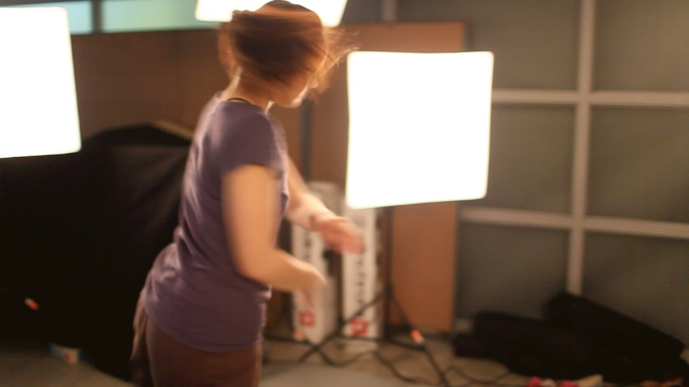

print 'hello. world'
hello! my name is Chen Hung-Han. i write code for living & for Art. this's web site is my portfolio from 2008-2012. please click the links at the left side bar to see more..
i am looking for MPhil/Ph.D research opportunity in the field of New Media Art or Digital Media. my research proposal could be download here, my resume here. If you have any relevant offers, please contact me directly. Thanks!
Chen Hung-Han @ stk.chen@gmail.com
Centroid, a Generative Art Project. 2012
the Visual effect generator is composed by Chen Hung-Han, performed by Yi-Ju Hsu.
Inspired by the theories of the relation between body and universe by philosopher Henri Bergson in Matter and Memory. Emphasizing the concept which took body as a privileged image among all images in the universe. I write a program using Kinect's depth image as the information source to build a particle system( the centroid) as the representation of embodiment.
This work cooperate with a professional dancer Yi-Ju Hsu. I ask her to perform & interact with the generator and try to compose a 3-5 mins dance.
centroid, the particle system
left: the image capture by Kinect. right: the generative result after feeding centroid the image capture by Kinect/
the setup of this project.
the depth camera, Kinect. It was used as information source in this project.
the setup of this project. this photo indicated how the performer interact with computer image on the screen.
the depth image of the dancer, which is captured by Kinect.
the movement of the dancer.
the body skeleton captured by Kinect and OpneNI. It was used as the position source of centroid.
the hackintosh machine i build for this project.
one iMac and one hackintosh.
the mackintosh is executing some programs.
final result
limbo under construction
Hung-Han, Chen. (2010). Limbo [Illustration].
I'm concerning about the devastating power bringing by language toward the context of language itself. I think that the only part that language presents is the only part of the context that language could represent. I try to preserve other things by making art. This illustration is my first trial. I try to reverse two literally identical ideas : living and death. The name "Limbo" is a speculative idea about the afterlife condition of those who die in Original Sin without being assigned to the Hell of the Damned. I take this idea to express the thing to the space in my illustration.
processing...
"Reverberated Labyrinth" - Multimedia Interactive Performance
February 2012 – December 2012 : "Reverberated Labyrinth" was part of A cultural and art exchange activity with The University of Music and Performing Arts Vienna. It was an multimedia interactive performance. Length: 60min. Location: Fanny–Mendelssohn– Saal. I worked as an interactive program designer and an audio-visual specialist.
a intro video about how we build the virtual space of memories on stage as a performance.
This is the 6-mins piece of "the memory Labyrinth" which is one of the most important parts of "Reverberated Labyrinth". In this part of the performance, our team members used the depth camera "Kinect" and projectors to create a virtual space projecting on the stage. The virtual space was intent to represent the meaning of the Chinese word "回(Hui)" and it's derived meaning "回憶(memories)".
"Hui / Zirkel" - Multimedia Interactive Performance
September 2010 – September 2011 : "Hui / Zirkel" is part of cultural and art exchange activity with TransMediaRT Leipzig, Germany. It was an multimedia interactive performance. Length: 50min. Location: WERK 2 - Kulturfabrik Leipzig, Kochstraß. I worked as an interactive program designer and an audio-visual specialist.
the complete video of the performance
it's a demonstration on how to operate the program. it also shows the concept of dividing spaces to make a Labyrinth for the performance.
"Love and the City" - Digital Musician
May 2012 : "Love and the City" is a digital musician cooperated with Director Hu Si-Xian and the crews of 8 Point Space theater in Chengdu, China. It was a digital musician which has 10-12 Chinese love songs chained into a story. I have many roles in this project because of limited resources. I was the cinematographer, the projection planner for video mapping, the interactive program designer and the audio-visual specialist.
the light of the projector...
three screen setup on the stage for projection.
the setup of the scene allows actors crossing the screens.
actors & actress
two projectors for covering whole stage.
the projection is interacting with the actor.
the setup of stage, another prospective.
plans of projection. working in a dark envirment.
the front right screen and the actress.
we use iPad to control every key events.
the hackintosh machine
working desk... what a mess.
miscellaneous works in 2008-2013 under construction
“Generative logo" for Institute of Applied Arts, NCTU. (2013)
A logo made for Institute of Applied Arts, NCTU. This project became part of my Quartz Composer tutorials. It was cooperated with a talented illustrator Han-Yun Liang.
"Zhu-Yun" multimedia performance (2012)
A visual effect generator for music. Written by by Quartz Composer. Corporated with Kimm Liao (the composer)
"Moving. Static. Carefree." - Annual Performance of Dept. of Dance of N.T.U.A(Link) (2011)
October 2011 : "Moving, Static, Carefree" was an annual performance of department of dance of National Taiwan University of Arts. In this project, I corporate with Prof. Chi-Min Hsieh and Ho Guang-Jie to design a 10-15min interactive projection on the stage for one chapter of the performance.
as a photojournalist
from August 2009 to June 2010 - i was working for the national new agency CNA in Taiwan. Took photos in social events.
i was responsible for providing news photos for all kinds of media in Taiwan. I have proven my proficiency in photography by providing 300-350 news photos which were selected by newspapers in one year.
i have been a freelance photographer who worked for case by case since i left CNA. i was working for a NGO in Nepal which help children eduction in 2010 (photo i took in Nepal is here). I'm also a wedding / event / conference / ceremony photographer who has at least four years of experience. more photos on flickr.
the photos i took was selected by the editor and posted on the time magazine website & WSJ. it's a taxi drivers protest event in Taipei. (09/12/8)
10/4/13 i was there, at the middle of crowd.
10/5/31 a performance rehearsal in Taipei.
10/4/13 people prayed for those suffer from the flood.

09/9/15 soccer players in the olympic for hearing impaired.
10/2/12 the vise president was answering questions.
09/12/8 four riders carrying huge cargos on the street.
10/2/28 a local ceremony blowing the god of the earth for protection.
10/4/7 lots of reporters tracing the mayor of Shanghai.
At a Distance under construction
Hung-Han, Chen. (2012). At a Distance [Interdisciplinary Art: Interactive Art + Performance].
Description: Cooperate with Yi-Ju Hsu, a professional dancer. Inspired by the difficulty to find the distinction between a photojournalist and a paparazzi. This work related to my working experience as a photojournalist.